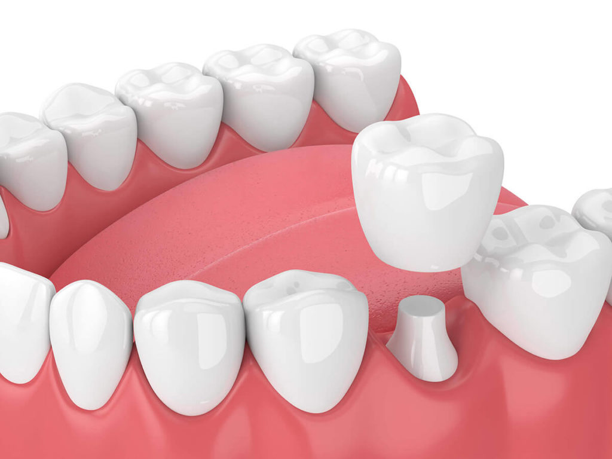
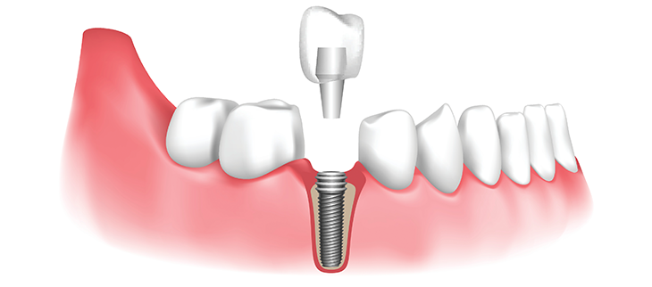
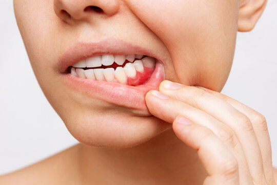

Dental Check UpEnsure your smile stays bright and healthy with a comprehensive dental check-up. Our skilled dental
professionals will assess your oral health, identify any issues, and provide personalized recommendations
for maintaining a radiant smile. Schedule your check-up today for peace of mind and confident dental care.
Dental Cleaning A routine procedure performed by dental professionals to remove plaque, tartar, and stains from the teeth.
It involves thorough cleaning of the teeth, gums, and surrounding tissues to prevent cavities, gum disease,
and other oral health issues. This non-invasive procedure typically includes scaling to remove plaque and tartar
buildup, followed by polishing to smoothen the tooth surfaces and enhance their appearance. Dental cleaning is
essential for maintaining optimal oral hygiene and preventing dental problems, contributing to a healthy and beautiful smile.
Tooth FillingA dental procedure used to repair a cavity or damaged tooth. During the procedure, the dentist removes the decayed
portion of the tooth and fills the space with a durable material, such as composite resin or amalgam. This restores
the tooth's shape, function, and strength while preventing further decay or damage. Tooth fillings are essential for
preserving the health of the tooth and preventing complications such as infection or tooth loss.
Root Canal TreatmentThis procedure involves removing infected or damaged tissue from inside the tooth, then sealing it to prevent further infection,
preserving the tooth rather than extracting it.
Tooth ExtractionExtractions involve the removal of severely damaged or decayed teeth that cannot be saved through other treatments.

Tooth CrowningCrowns are caps placed over damaged or weakened teeth to restore their strength, shape, and appearance.
Tooth BridgingBridges are used to replace missing teeth by anchoring artificial teeth to adjacent natural teeth or implants.

ImplantsDental implants are artificial tooth roots surgically placed into the jawbone to support replacement teeth,
providing a permanent solution for missing teeth.
Orthodontic TreatmentThese treatments correct misaligned teeth and bite issues using braces, aligners, or other devices to improve both oral health and aesthetics.
Tooth Cosmetic ProcedureCosmetic procedures like teeth whitening or veneers: These procedures enhance the appearance of teeth, whitening stained teeth or covering
imperfections with thin porcelain shells (veneers).
Oral SurgeryOral surgery or periodontal treatments: These treatments address more complex dental issues such as gum disease, impacted teeth,
or jaw-related problems through surgical interventions or specialized treatments targeting the gums and supporting structures.

Periodontal TreatmentEnsure your smile stays bright and healthy with a comprehensive dental check-up. Our skilled dental
professionals will assess your oral health, identify any issues, and provide personalized recommendations
for maintaining a radiant smile. Schedule your check-up today for peace of mind and confident dental care.